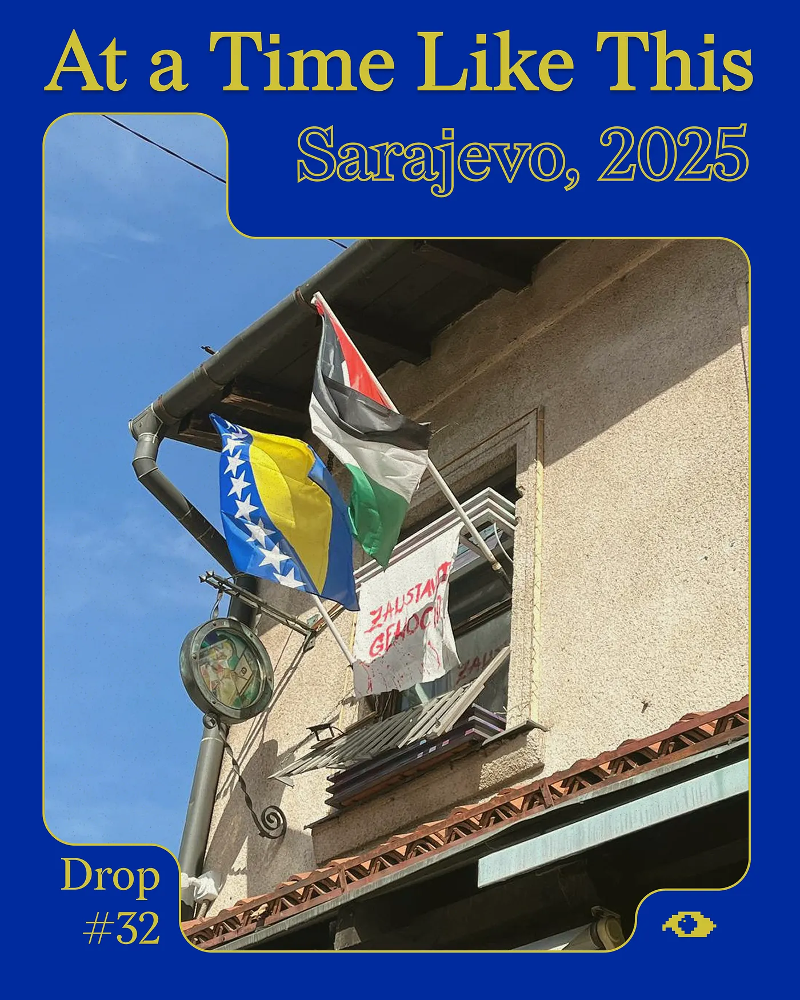
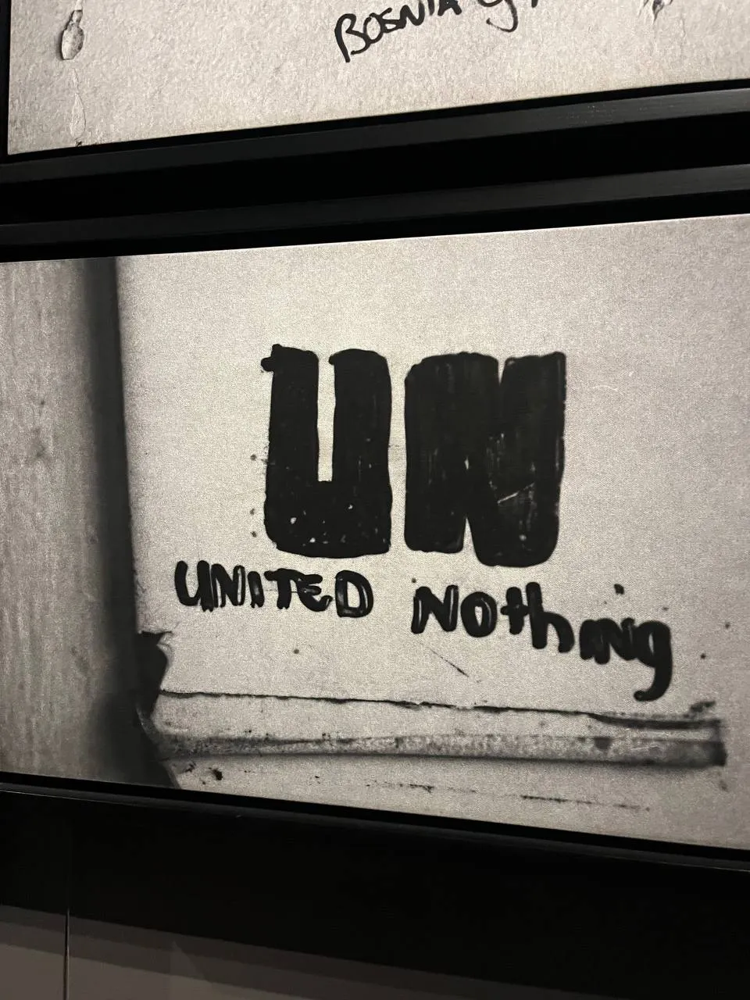
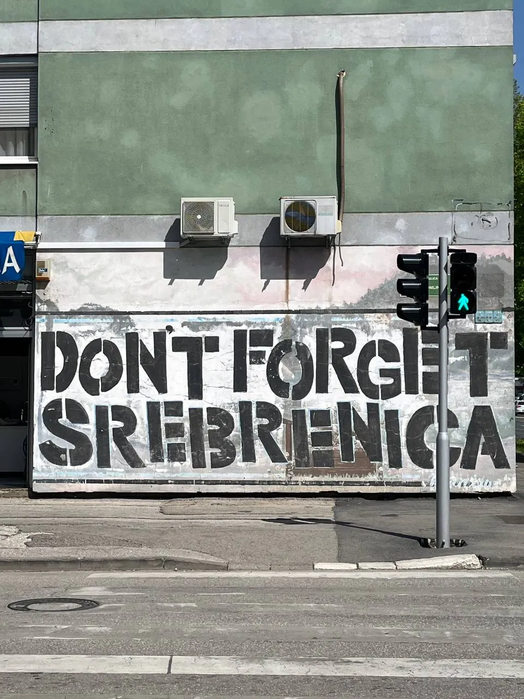
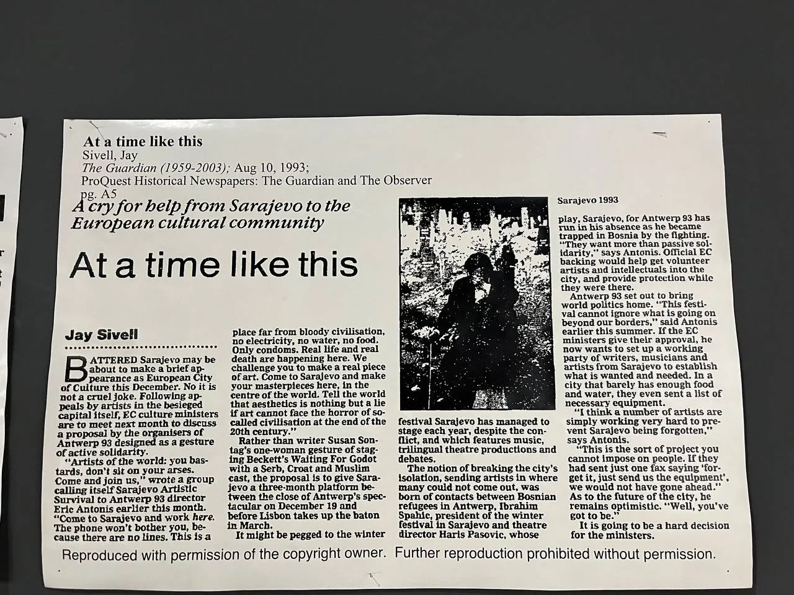
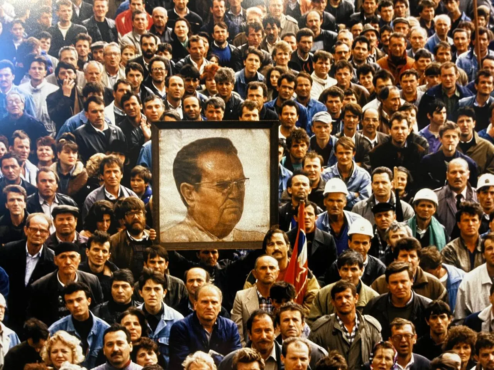
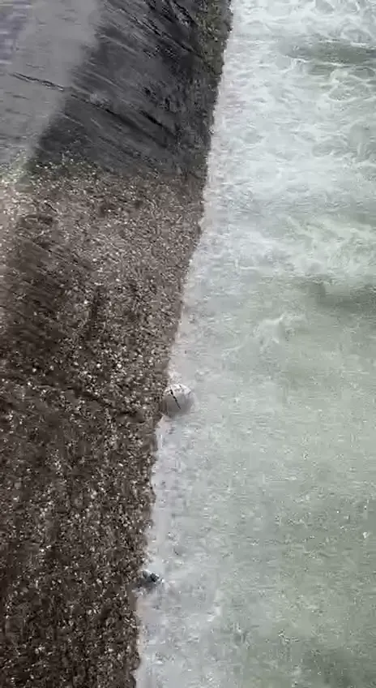
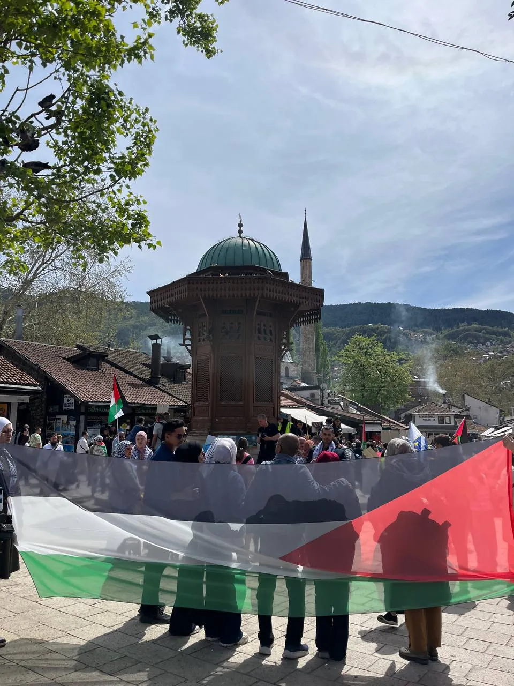

Drop #32 · April 23, 2025 · 15 min read
Hey everyone (▰˘◡˘▰)
Welcome back to DROPS, REINCANTAMENTO’s newsletter.
In Drop #32, I wonder through Sarajevo's jagged memories, historical loops, trapped objects and a sparking aliveness. In an intra-temporal dialogue with Gaza, Sarajevo discloses itself as a city that refuses to be merely a symbol of someone else's moral lesson.
I want to thank my family and Edin for their support in conceiving this piece. The piece is available in both Italian and English.

Walking along the riverbank of Sarajevo's Miljacka, one notices objects trapped in the backwash of various drops in the water level. These small dips capture plastic bottles, soccer balls, even a tire, in their constant eddying, preventing them from moving beyond.
These objects at the mercy of the Miljacka's flow seem to speak to the condition of the city itself: capital of a country in rebirth, yes, but frozen in 1995 and those Dayton Accords that guarantee its Byzantine constitutional architecture.
Sarajevo had been for me, until these last few days, nothing more than a name in history books. Sarajevo is the signifier of that infamous drop that made the cup overflow, to quote the typical expression from history textbooks, referring to the shot fired by Gavrilo Princip, Serbian nationalist, at the Austro-Hungarian heir to the throne Franz Ferdinand and his wife. The assassination on June 28, 1914, that set the European continent ablaze and led to the point-of-no-return catastrophe of the First World War, the reckoning of the Imperial age and the end of the Belle Époque illusion.
Sarajevo is then the name of another story: the collapse of the Yugoslav Federation and the horrific civil war that followed, with the persecution of Bosnia's Muslim population and the siege—lasting more than 1,000 days (!)—of the capital itself. Events I know some
thing about, but always too little, as I realize these days.

Walking through this medium-sized city, surrounded by tall, lush hills, with its narrow Ottoman streets and Austro-Hungarian buildings, and you realize, at least a little more, how insane, how suffocating a siege must have been here. Snipers on the hills, pumped full of amphetamines and alcohol, shooting at passersby without restraint. More than a thousand days without drinking water, electricity, and with little aid from abroad.
History materializes, the name takes form in people and buildings, in mortar holes filled with red paint and bullet holes in walls, in the proud gaze of a population that tells itself, through museums and galleries dotting the city, of its resistance to genocide. Sarajevo, a city of survivors.
When I arrive on a warm Easter Sunday, the first thing I notice are a couple of young girls wearing kufiyehs and carrying Palestinian flags. In the main square, there's a vigil with the motto “You Can't Burn The Truth”. Temporalities overlap: Sarajevo in 1995 is Gaza in 2025. The past that cannot flow gets reactivated in sisterhood with Palestine, in the struggle against the ongoing genocide behind the walls of Israeli apartheid. Out-of-joint times converge. Visual icons of Palestinian resistance and emblems of solidarity are everywhere. I buy a shirt from the '84 Olympics, another piece in the city's chronological mosaic, from an elderly tailor who gifts me a patch with the Palestinian flag after noticing my kufiyeh.

It's not just widespread solidarity weaving these two cities together. Moving through the corridors of Sarajevo's history, through survivors' chronicles, you realize how all the elements were already at play back then. Beyond the exterminating impulse of Serbian nationalism, it's the slimy, complicit silence of the West that remains a constant in these tragic stories. Western leaders knew about the bloodbaths scattered across former Yugoslav territory; they knew and fanned the flames for their own interests: newly reunified Germany and the City of London, Bill Clinton and Mitterrand, the idiotic inaction of neighboring Italy. How could anyone have thought history had ended while all this was happening? Looking at today and wonder: is this what will happen to Gaza? To Mariupol? To Congo, Sudan, and all the stories we're not telling, the horrors taking place at this very moment?
The century that began with the shot at Franz Ferdinand concluded in the mass graves of Srebrenica, where Muslims from Eastern Bosnia were massacred. How could anyone still speak of Europe after Sarajevo?

Another constant: the substantial uselessness of liberal globalist institutions. “United Nothing” wrote Dutch soldiers on the walls of Srebrenica, as they became complicit in the genocide of a population they were supposed to protect. They killed them all in the safe zone where they had made them take refuge. It reads like Al Jazeera's reporting on any given day since October 8th.
The continuum of history functions with merciless logic. There is no Gaza in the '20s without Sarajevo in the '90s. Horror cannot continue and repeat without the process of erasure. Helping this process was the establishment of the International Criminal Court to try those responsible for war crimes and restore a semblance of decency to the "rules-based" order.
This achievement of international justice is celebrated in the rebuilt Library of Sarajevo, which was set ablaze by the enemy army in '93. If a thousand days of siege and countless massacres could have taught a lesson to the criminal hypocrisy of the West, that lesson lived in the institution of the international court. The dismantling, first symbolic and then effective, of the idea of justice that court represents—with Putin's invasion of Ukraine first and then with the refusal to proceed with the arrest of Israeli war criminals—represents a shameful betrayal of the entire world, and to the Bosnian people in particular.
Recognizing a historical dialectic doesn't mean accepting it cynically. The stories of the siege speak as much of death as of stubborn, tenacious life. Of underground rock parties, with bands recording demos in air-raid shelters during breaks from fighting; of Radio Zid broadcasting 24 hours a day giving voice to new Rock, Punk, and Grunge groups; of the Rock under Siege concert which, despite technical problems and curfew, represented a moment of collective catharsis for the city. Of theaters open despite the snipers, like Kamerni 55 which in 1993 alone hosted 431 cultural events, of mutual aid prevailing over blind hatred—like the daily collective "expeditions" to collect water or share aid packages, transforming moments of extreme danger into occasions of urban solidarity.
There are resonances with the stories coming out of Gaza, the elective affinities of peoples whose existence is bound to a struggle for survival itself, but who refuse to be defined solely by this struggle. There's a vital excess not anticipated by the dialectical movement, a conatus that leads to seeking wonder in the world even when rationally, one couldn’t speak of wonder.

In this regard, the thoughts and words of Basel al-Araj, young political theorist and martyr to the Palestinian cause, stay with me forever. Basel, in one of his last pieces, turns to the idea of wonder and enchantment to explain what continues to motivate the Palestinian struggle:
"You, the academically inclined, set your sights on disenchanting all things by defining and explaining, reckoning that it will land you on the truth. In these overcast days I tell you I need no explanatory framework for rainfall – whether it is Thor's hammer or God's mercy or meteorologists' consensus. I want none of it. What I want is my unabating wonder and my silly smile whenever the rain falls. Every time as if the first time, a child bewitched and the magic of the world."
Rationality isn't enough to understand these processes. It certainly isn't enough to understand Sarajevo, and its laborious rebirth, the attempt to seek a good life beyond the wounds of the past and the serious instabilities of the present. Seeing and feeling this radical joy must become an experience of transfiguration; it must instigate change in us, lazy cultured Europeans.

I want to conclude with an appeal I found at the Museum of History of Bosnia-Herzegovina in a newspaper clipping. It's a piece by Jay Sivell for The Guardian from August 10, 1993, titled “At a Time Like This”, reporting the appeal that the group Artistic Survival of Sarajevo made to Eric Antonis, director of "Antwerp European Capital of Culture" in 1993.
"Artists of the world: you bastards, don't sit on your arses. Come and join us," wrote a group calling itself Sarajevo Artistic Survival to Antwerp 93 director Eric Antonis earlier this month. "Come to Sarajevo and work here. The phone won't bother you, because there are no lines. This is a place far from bloody civilisation, no electricity, no water, no food. Only condoms. Real life and real death are happening here. We challenge you to make a real piece of art. Come to Sarajevo and make your masterpieces here, in the centre of the world. Tell the world that aesthetics is nothing but a lie if art cannot face the horror of so-called civilisation at the end of the 20th century."
It hurts to realize that neither the civilization of the 2020s nor the world's artists have truly changed. When will we stop sitting on our asses?
Versione Italiana
Passeggiando sul lungo fiume di Sarajevo, la Miljacka, si scorgono oggetti intrappolati nel riflusso d'acqua dei vari dislivelli. Questi piccoli dislivelli intrappolano bottiglie di plastica, palloni da calcio, persino uno pneumatico, nel loro costante riflusso, impedendo loro di muoversi oltre.
Gli oggetti in balia del flusso della Miljacka sembrano parlare della condizione della città stessa, capitale di un paese in rinascita sì, ma congelato al 1995 e a quegli Accordi di Dayton che ne garantiscono la bizantina architettura costituzionale.
Sarajevo è stata, fino a questi ultimi giorni, soltanto un nome della storia per me. Sarajevo è il nome di quella famigerata goccia che fece traboccare il vaso, per citare l'espressione dei libri scolastici di storia: lo sparo di Gavrilo Princip, nazionalista serbo, all'erede al trono austro-ungarico Francesco Ferdinando e a sua moglie. L'attentato del 28 giugno del 1914 che incendia il Continente Europeo e porta alla catastrofe senza ritorno della Prima Guerra Mondiale, la resa dei conti dell'età Imperiale e la fine dell'illusione della Belle Époque.

Sarajevo è poi il nome di un'altra storia: il collasso della Federazione Jugoslava e l'orrenda guerra civile che ne è seguita, con la persecuzione della popolazione musulmana della Bosnia e l'assedio di più di 1000 giorni (!), della capitale stessa. Eventi di cui ho un'idea, di cui so qualcosa ma sempre troppo poco, come mi rendo conto in questi giorni.
Cammini in questa città di medie dimensioni, circondata da colline alte e rigogliose, con le sue vie strette ottomane e i palazzi austro-ungarici, e ti rendi conto, almeno un po' di più, di quanto folle, asfissiante possa essere stato un assedio qui. I cecchini sulle colline, pieni di anfetamine e alcool, che sparavano sui passanti, senza alcun ritegno. Più di mille giorni senza acqua potabile, elettricità e con pochi aiuti dall'estero.

La storia si concretizza, il nome prende corpo nelle persone e negli edifici, nei buchi di mortaio riempiti dalla vernice rossa e nei fori sulle pareti, nello sguardo fiero di una popolazione che si racconta, attraverso i musei e le gallerie che puntellano la città, la propria resistenza ad un genocidio. Sarajevo, una città di sopravvissuti.
Quando arrivo in una calda domenica di Pasqua la prima cosa che noto sono un paio di ragazzine che indossano la kufyeh e portano in giro bandiere palestinesi. Nella piazza principale c'è una veglia al motto “You Can't Burn The Truth”. Le temporalità si sovrappongono: Sarajevo nel 1995 è Gaza nel 2025. Il passato che non riesce a fluire viene ri-attualizzato nella sorellanza con la Palestina, nella lotta contro il genocidio in corso tra le mura dell'apartheid israeliana. I tempi fuori di sesto si congiungono assieme. Le icone visive della resistenza palestinese e le effigi di solidarietà sono ovunque. Compro una maglietta delle Olimpiadi '84, altro tassello nel mosaico cronologico della città, da un anziano sarto e mi regala una toppa con la bandiera palestinese dopo aver notato la mia kufiyeh.
Non è solo la solidarietà diffusa a tessere assieme le due città. Attraversando i corridoi della storia di Sarajevo, le cronache dei sopravvissuti, ci si rende conto di come tutti gli elementi fossero già in gioco allora. Oltre alla pulsione sterminatrice del nazionalismo serbo, è il viscido silenzio complice dell'Occidente ad essere una costante in queste storie tragiche. Sapevano i vertici occidentali dei bagni di sangue sparsi sull'ex territorio jugoslavo, lo sapevano e soffiavano sul fuoco per i loro interessi: la Germania appena riunificata e la City di Londra, Bill Clinton e Mitterand, l'idiotica nullafacenza del vicino Stato Italiano. Come si può aver pensato che la storia fosse finita mentre accadeva tutto questo? Guardi all'oggi e ti chiedi: è questo che succederà a Gaza? A Mariupol? Al Congo, al Sudan e a tutte le storie che non stiamo raccontando, agli orrori che hanno luogo in questo stesso momento?
Il secolo iniziato con lo sparo a Francesco Ferdinando si concludeva nelle fosse comuni di Srebrenica, dove venivano massacrati i musulmani della Bosnia Orientale. Come si è potuto parlare ancora di Europa dopo Sarajevo?

Altra costante: la sostanziale inutilità delle istituzioni del globalismo liberale. United Nothing scrivevano i soldati olandesi proprio sui muri di Srebrenica, mentre si rendevano complici del genocidio di una popolazione che avrebbero dovuto proteggere. Li uccisero tutti quanti nella zona franca dove li avevano fatto rifugiare. Sembra di leggere le cronache di Al Jazeera in un giorno qualsiasi dall'8 ottobre a oggi.
Il continuum della storia funziona con una logica spietata. Non c'è Gaza negli anni '20 senza Sarajevo negli anni '90. Non si può proseguire e ripetere l'orrore senza il processo di rimozione. Ad aiutare questo processo fu l'istituzione della Corte Penale Internazionale per processare i responsabili dei crimini di guerra e restituire una parvenza di decenza all'ordine "basato sulle regole".
Questo risultato della giustizia internazionale è celebrato nella ricostruita Biblioteca di Sarajevo, che venne data alle fiamme dall'esercito nemico nel '93. Se mille giorni di assedio e innumerevoli massacri potevano aver portato un insegnamento all'ipocrisia criminale dell'occidente, quell'insegnamento viveva nell'istituzione della corte internazionale. L'abbattimento, prima simbolico e poi effettivo, dell'idea di giustizia che quella corte rappresenta, con l'invasione di Putin dell'Ucraina prima e dopo con il rifiuto a procedere all'arresto dei criminali di guerra israeliani, rappresenta un vergognoso tradimento al mondo intero, al popolo bosniaco in particolare.
Riconoscere una dialettica storica non significa però accettarla cinicamente. Le storie dell'assedio parlano tanto di morte quanto di tanta, caparbia vita. Di feste rock nel sottosuolo, con band che registravano demo in rifugi antiaerei durante le pause dai combattimenti; di Radio Zid che trasmetteva 24 ore su 24 dando voce a nuovi gruppi Rock, Punk e Grunge; del concerto Rock under Siege che, nonostante i problemi tecnici e il coprifuoco, rappresentò un momento di catarsi collettiva per la città. Di teatri aperti nonostante i cecchini, come il Kamerni 55 che nel solo 1993 ospitò 431 eventi culturali, di mutuo aiuto che prevale sull'odio cieco - come le 'spedizioni' quotidiane collettive per la raccolta dell'acqua o la condivisione dei pacchi di aiuti, trasformando momenti di estremo pericolo in occasioni di solidarietà urbana.

Si sentono le risonanze con le storie che escono da Gaza, le affinità elettive di popoli la cui esistenza è legata a una lotta per la sopravvivenza stessa, ma che si rifiutano di farsi definire unicamente da questa lotta. C'è un'eccedenza vitale non prevista dal movimento dialettico, un conatus che porta a cercare la meraviglia nel mondo anche quando, razionalmente, di meraviglia non si potrebbe parlare.
A questo proposito, vivono per sempre con me i pensieri e le parole di Basel al-Araj, giovane teorico politico e martire della causa palestinese. Basel, in uno dei suoi ultimi pezzi, si rivolge all'idea di meraviglia e incanto per spiegare cosa continua a motivare la lotta palestinese:
"Tu, l'accademico, miri a disincantare ogni cosa definendo e spiegando, convinto che ciò ti condurrà alla verità. In questi giorni nuvolosi ti dico che non ho bisogno di alcuna struttura esplicativa per la pioggia – che sia il martello di Thor o la misericordia di Dio o il consenso dei meteorologi. Non voglio niente di tutto ciò. Ciò che voglio è il mio incessante stupore e il mio sciocco sorriso ogni volta che la pioggia cade. Ogni volta come se fosse la prima, un bambino ammaliato e la magia del mondo."
La razionalità non basta per capire questi processi. Non basta di certo per capire Sarajevo, e la sua faticosa rinascita, il tentativo di cercare una buona vita oltre le ferite del passato e le gravi instabilità del presente. Vedere e sentire questa gioia radicale deve diventare esperienza di trasfigurazione, deve istigare il cambiamento in noi, pigri Europei acculturati.

Voglio quindi concludere con un appello che ho trovato al Museo di Storia di Bosnia-Erzegovina in un ritaglio di giornale. È un pezzo di Jay Sivell per The Guardian del 10 agosto 1993 titolato At a Time Like This e riporta l'appello che il gruppo Sopravvivenza Artistica di Sarajevo lanciò al direttore Eric Antonis di "Anversa Capitale della Cultura Europea" nel 1993.
"Artisti del mondo: bastardi, non restate seduti sulle vostre chiappe. Venite e unitevi a noi. Venite a Sarajevo e lavorate qui. Il telefono non vi disturberà, perché non ci sono linee. Questo è un luogo lontano dalla civiltà insanguinata, senza elettricità, senza acqua, senza cibo. Solo preservativi. La vita reale e la morte reale stanno accadendo qui. Vi sfidiamo a creare un'opera d'arte autentica. Venite a Sarajevo e create i vostri capolavori qui, nel centro del mondo. Dite al mondo che l'estetica non è altro che una bugia se l'arte non può affrontare l'orrore della cosiddetta civiltà alla fine del XX secolo."
Fa male constatare che né la civiltà degli anni '20 del XXI secolo né gli artisti del mondo siano davvero cambiati. Quando smetteremo di stare seduti sulle nostre chiappe?